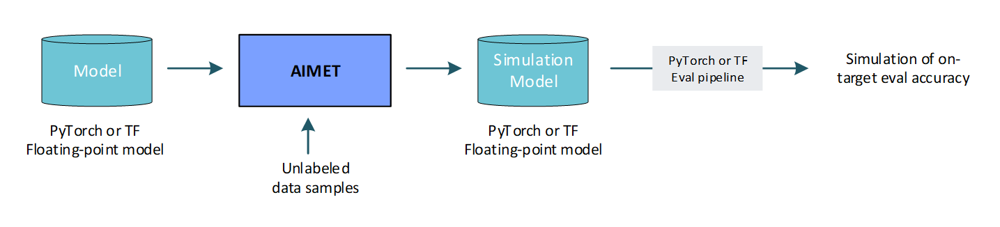

AIMET Model Quantization¶
Quantization refers to the process of deploying trained FP32 models on low-precision fixed-point integer hardware. Quantization can provide dramatic gains in inferences/second and dramatically reduced power requirements for model inference. However, it can be challenging to maintain model accuracy when running on quantized runtimes, say in INT8 precision.
How does AIMET help?¶
AIMET provides various optimization techniques that help improve the quantized accuracy of ML models. “Quantized accuracy” refers to the accuracy of FP32 models when they are quantized and run on quantized target runtimes.
AIMET quantization techniques can be categorized into two buckets
1. Post-training techniques: These techniques require a few unlabeled data samples and don’t require any model training. So they are easier to run. For some models these techniques provide very good gains to get quantized accuracy close to the original FP32 accuracy. For other models and tasks, they may not be sufficient by themselves to get to an acceptable accuracy target.
2. Quantization-aware training (QAT): These techniques can generalize to help most models improve quantized accuracy. They do require additional training for a few more epochs. This additional training is also sometimes referred to as fine-tuning. To get the best benefits, just like with regular training, QAT would need the user to choose the right hyper-parameters. So QAT is a little more involved technique from the user perspective and also can take longer to run.
AIMET is designed to combine the above techniques and we often find that this produces the best possible results.
List of AIMET quantization techniques¶
Post-training techniques
Calibration: Use data samples to find optimal per-tensor or per-channel quantization parameters (like scale/offsets)
Cross-Layer Equalization: Equalizes weight ranges in consecutive layers
Bias Correction: Corrects for a shift in layer outputs due to quantization noise
Adaptive Rounding: Learn optimal rounding for weight tensors
Quantization Aware Training
Quantization-aware Training (QAT): Fine-tune a simulated quantized model to adapt model weights to minimize quantization noise
QAT with range-learning: Fine-tune a simulated quantized model to adapt model weights and scale/offsets to minimize quantization noise
Visualizations
Visualizations: AIMET provides visualization tools that help guide the user to determine if AIMET post-training quantization techniques are useful for a given model
Please see the Quantization Guidebook - which includes some practical advice on using the Quantization features, and how to combine the features.
Use Cases¶
Predict on-target accuracy: AIMET enables a user to simulate the effects of quantization to get a first order estimate of the model’s accuracy when run on quantized targets. This is useful to get an estimate of on-target accuracy without needing an actual target platform. Note that to create a simulation model, AIMET uses representative data samples to compute per-layer quantization encodings.
Fine-tune model for computed per-layer encodings: AIMET enables a user to compute per-layer quantization encodings using representative data samples. And it further enables the user to use a training pipeline to fine-tune the model to improve quantized accuracy given these computed encodings.

- Post-training quantization (no fine-tuning): In some cases, a user may want to not further train the model to improve quantized accuracy. Some reasons for this may be
May not have access to a training pipeline for this model
May not have access to labeled training data to use for fine-tuning
May want to avoid the time and effort it would take to pick the right hyper-parameters and train the model
In the above scenarios, AIMET provides a set of post-training quantization techniques that alter the model parameters to enable better quantized accuracy. These techniques are designed to fix for specific equalization issues in the model and may not work for all models.
AutoQuant: AIMET provides an API that integrates all the post-training quantization techniques.